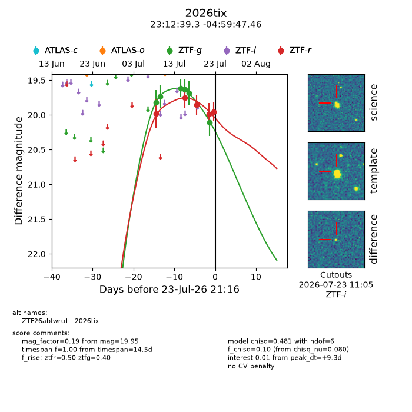
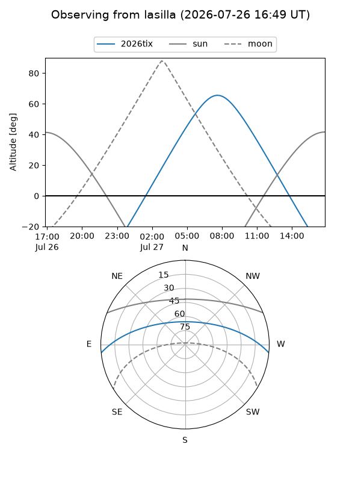
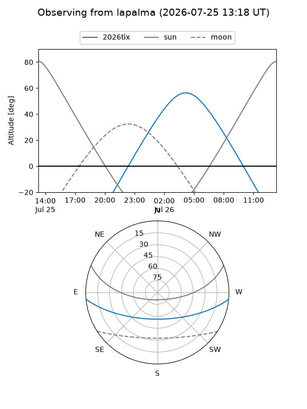
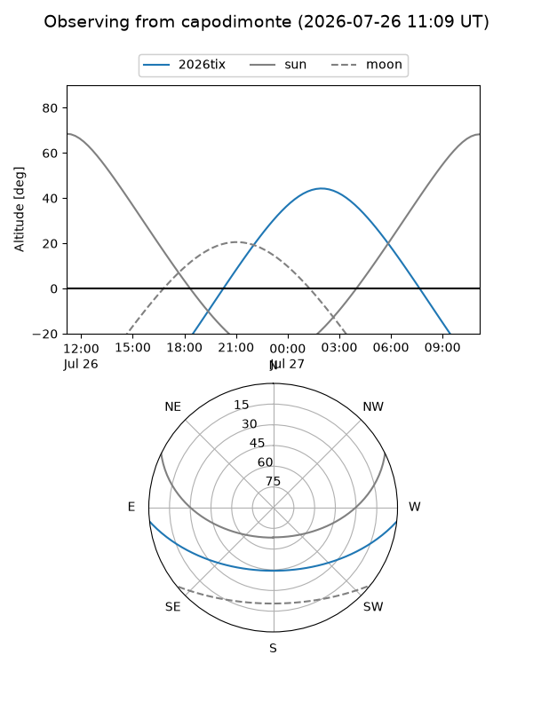
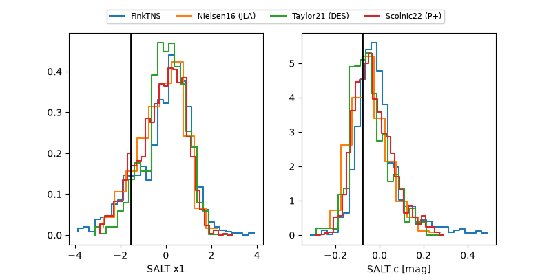

2026tix
Target 2026tix at 2026-07-23 21:19
Aliases and brokers:
FINK-ZTF: ztf.fink-portal.org/ZTF26abfwruf
Lasair-ZTF: lasair-ztf.lsst.ac.uk/objects/ZTF26abfwruf
ALeRCE-ZTF: alerce.online/object/ZTF26abfwruf
YSE-PZ: ziggy.ucolick.org/yse/transient_detail/2026tix
TNS name: wis-tns.org/object/2026tix
Direct TNS query: direct search
alt names
ZTF26abfwruf (ztf,fink_ztf)
2026tix (tns,yse)
Coordinates:
equatorial (ra, dec) = 348.1638,-4.99652
equatorial (HMS+DMS) = 23:12:39.30,-04:59:47.46
galactic (l, b) = (71.7778,-57.69665)
Flags:
TNS type: nan
peak dt: +9.3
Photometry:
last ztfg=20.11, ztfr=19.95
6 ztfg, 5 ztfr detections
Lightcurve

Visibility



Additional plots
